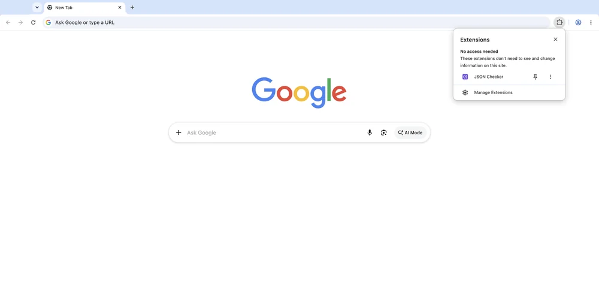
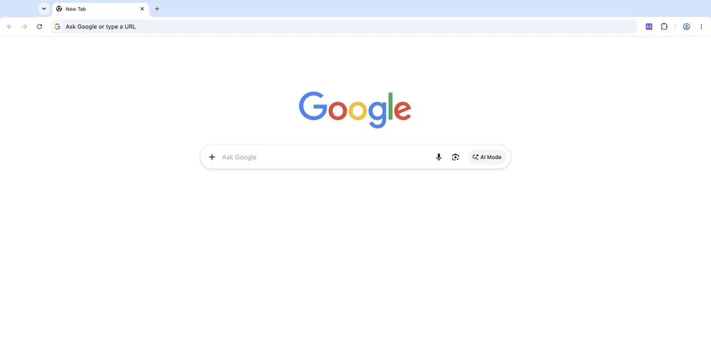

Installed
Thanks for installing JSON Checker
Pin it to the toolbar first, so the panel is always one click away.
- Click the puzzle piece in the top right of Chrome.
- Click the pin next to JSON Checker.

Open the extension (3) on any page. The panel opens on the right side of the window, not as a popup:

There is a faster way in, too. Select JSON anywhere on a page, right click it and choose Check selected JSON — the panel opens with the payload already in it. More detail is on Help.